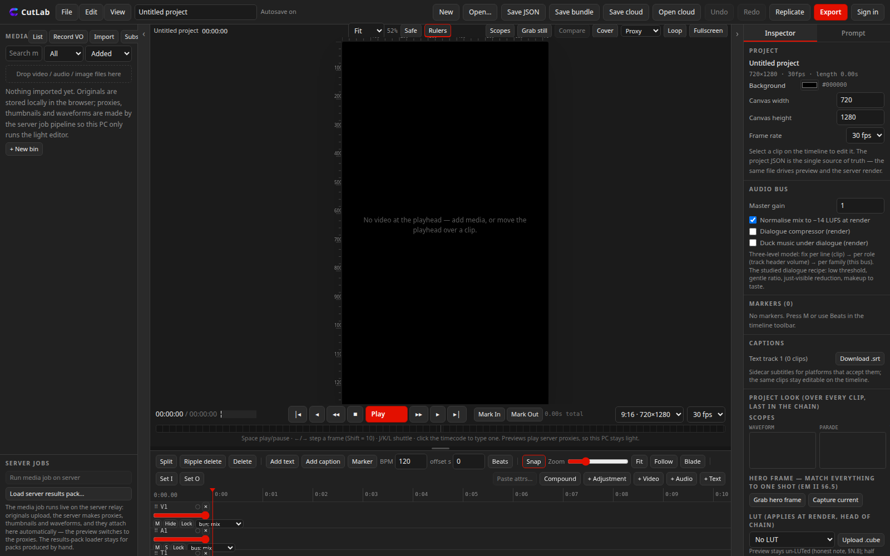
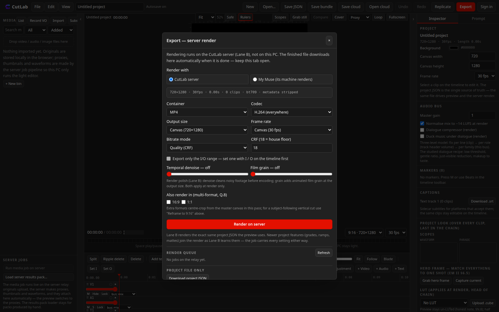
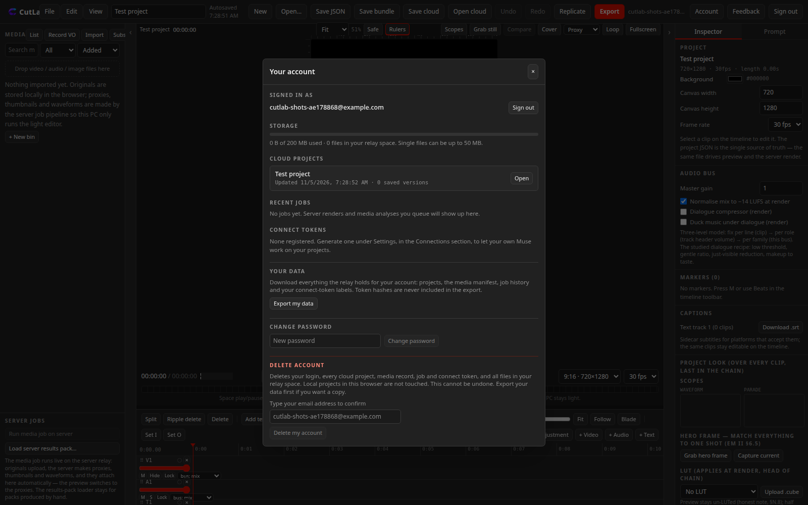

Browser video editor, in beta
Edit video in the browser. Render it somewhere with real power.
CutLab is a timeline editor that runs entirely in your browser, built for short-form work. The heavy jobs, making proxies, analysing media and rendering the final file, run on the CutLab server. If you have your own Muse, you can connect it and let it render on your machine instead. Your computer only ever runs the light editor.
Free during beta. Sign up with an email address inside the editor.

What the editor does
The project file is a single document that the preview, the server renderer and your own AI all read. That one decision is what makes the rest of CutLab possible.
Timeline editing
Multi-track video, audio and text timelines with compound clips, adjustment layers, multicam, masks, transitions and keyframed colour. Preview plays lightweight proxies the server makes for you, so scrubbing stays smooth on a modest laptop.
Prompt edits
Describe a change in plain words in the Prompt tab. CutLab rewrites the project to match and reports what it changed. The edit lands in the same project file you can inspect and undo, never in a black box.
Replicate an edit
Give CutLab a reference video and your own clips. It analyses the reference, cuts, beat grid, captions and pacing, and rebuilds that structure with your footage.
Sound and analysis jobs
Transcription, beat detection, clip tracking and vocal separation run as server jobs. Results come back into the project: captions on the text track, markers on the beat grid, isolated vocals as audio you can mix.
Colour
A serial grade stack with curves, a qualifier, LUT support and scopes. The render applies the same grade chain the preview shows, including per-hue curves.
Two ways to finish a render
In the Export panel you choose who renders. The CutLab server queue is the default: upload, wait, download the finished MP4. The second door is yours. Connect your own Muse with a personal token and queue renders for it; your Muse claims the job, downloads the project and media, renders with the official CutLab renderer on its own machine, and uploads the MP4 back to your queue. The server never touches agent jobs.

Step by step: connect your AI, then render with your Muse. If you would rather keep AI out of it, connect a key from a provider such as Mercury in the prompt lane instead. Keys stay on your side either way.
Your account is the boundary
Everything on the relay is scoped to your account: projects, media, jobs and connect tokens. One account cannot read another account's files, and the rules are enforced on the server, not in the page. The Account panel in the editor shows your live numbers, exports everything the relay holds for you as a single download, and deletes the account outright when you ask.

| Limit | During beta | Why |
|---|---|---|
| Working storage | 200 MB per account | The relay runs on a shared free tier. The meter in your Account panel counts the same files the limit counts. |
| Single file size | Up to 50 MB | The storage bucket itself refuses larger files, so the limit holds even if a client misbehaves. |
| Price | Free during beta | Paid tiers, if they come, will be priced from measured running costs. Nothing is charged today. |
| Your renders | Server queue, or your own machine | Renders on your own Muse use your compute and never enter the server queue. |
Details live in the help pages: files and quotas and export and delete your data.
Start in the editor
Open the editor, tap Sign in, and create an account with your email. Local editing works without an account; the account is what turns on cloud saves, server jobs and the connect token. If something breaks, the Feedback button in the editor writes straight to the relay under your account.